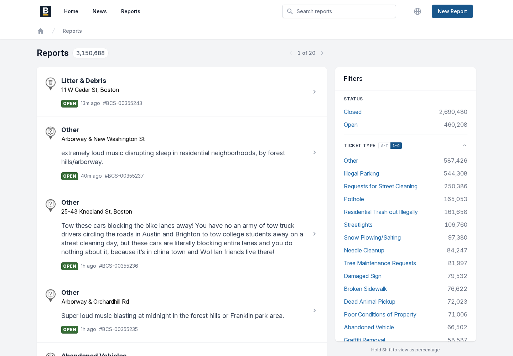
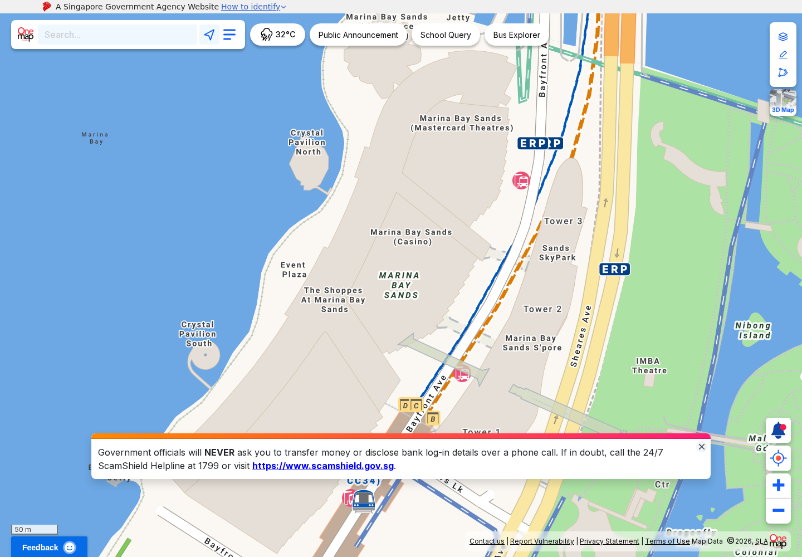

BOS:311 · Boston
Acuan terpilih untuk daftar dan pembaruan. Foto menonjol dan peta di halaman utama adalah adaptasi LaporJalan.
Buka layanan BostonPeta Jakarta tetap menjadi halaman utama. Daftar berfoto, detail, dan pembaruan warga mengikuti konteks titik yang sedang dilihat.
Nama tetap LaporJalan. Pola laporan mengambil acuan BOS:311. Warna, simbol dan komposisi di bawah merupakan usulan untuk ditinjau. Buka mockup lanjutan: peta, detail, komentar, dan formulir →
Wireframe tata letak.
Belum memuat basemap atau titik laporan.
Desktop / Daftar. Papan desain menunjukkan struktur, bukan data Jakarta atau aplikasi yang sudah berfungsi.
Warna membantu mengenali kategori. Bentuk dan label tetap menyampaikan makna tanpa warna.
Kondisi jalan dan bukti di lokasi.
Kategori pekerjaan, bukan status penanganan.
Pengamatan saluran di sekitar jalan.
Bukti dan waktu pengamatan.
System sans, judul tegas, garis pemisah, dan satu warna utama untuk tindakan.
#142B3A#0B5B70#55646D#F5F6F4#FFFFFFTangkapan situs publik untuk penelitian. Tidak digunakan sebagai data atau aset laporan LaporJalan.

Acuan terpilih untuk daftar dan pembaruan. Foto menonjol dan peta di halaman utama adalah adaptasi LaporJalan.
Buka layanan Boston
Acuan pendukung untuk ruang peta, pencarian dan kontrol lokasi. Bukan acuan proses pengaduan.
Buka OneMap